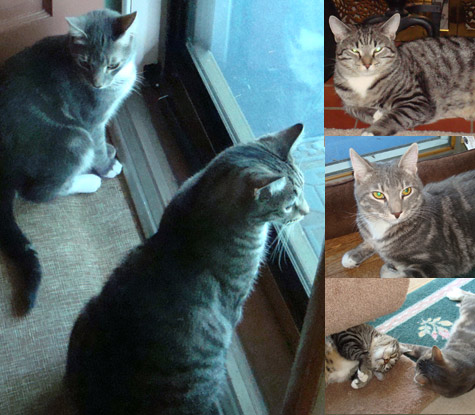

February 2013

We recently lost our cat Murray who was a stray that introduced us to the FIV Feline Immuno Virus. The loss was too much to bear. We decided to adopt another cat and went to PAWS to look for one. Once we arrived, my husband and I fell in love with two different cats for different reasons. Nizzy, our larger striped Tiger cat was brought back to PAWS and had been abused. My husband felt he would never find a home. As for myself, I fell in love with Migsy the foxy looking smaller cat who was the only cat not adopted from a litter of 12; he licked me and begged me to take him home. After quite a discussion we decided that we wanted to adopt both, but were not sure they could live together so we asked the folks at PAWS to put them together for a week to see if they got along. To our surprise they did and we ended up adopting both of them. When we got home they hid under our bed for about 8 hours and then slowly began creeping out. Within an hour or so they began chasing each other through the halls and running up and down our cellar steps. They have been quite inseparable ever since. Migsy drinks water from a Dixie cup in our bathroom all day long and is quite the lap cat. Migsy likes to be held and snuggled with but is our shy boy.
|